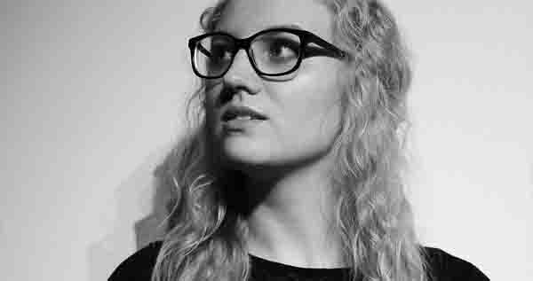

Wie zijn wij?

Pablo Picasso
Mijn volledige naam is Pablo Diego José Francisco de Paula Juan Nepomuceno María de los Remedios Cipriano de la Santísima Trinidad Ruiz y Picasso.
Ik ben geboren te Málaga (Spanje) op 25 oktober 1981. Op de leeftijd van drie verhuisden mijn ouders en ik naar Gent, België. Ik ging samen met mijn collega’s naar de Arteveldehogeschool
in Gent waar we “Grafische en digitale media” studeerden, zo hebben we elkaar ook leren kennen. Ik heb echt van mijn hobby’s mijn beroep gemaakt. Tekenen, schilderen, het grafische, beeldhouden …
dat zijn mijn grote passies.

Salvador Dalí
Wat velen niet weten is dat ik een zeer lange naam heb: Salvador Domingo Felipe Jacinto Dalí i Domènech, markies de Dalí de Pubol. Ik ben geboren op 11 mei 1984 te Figures (Spanje).
Op jonge leeftijd verhuisde ik met mijn toenmalige vriendin naar Merelbeke. Ik heb eerst enkele jaren gewerkt als postbode, maar heb daarna toch besloten van mijn echte roeping te volgen.
Die was “Grafische en digitale media” studeren aan de Arteveldehogeschool. Eens afgestudeerd kwamen mijn collega’s en ik samen met een plan. Dit plan is nu onze job.

Vincent van Gogh
Wie me echt goed kent weet dat mijn correcte naam Vincent Willem van Gogh is. Ik vier mijn verjaardag op 29 juli. Ik ben geboren te Zundert (Nederland), dat is een stadje dicht bij
de Belgische grens. Het duurde dan ook niet lang voor mijn ouders besloten me mee te nemen naar België. Op 16-jarige leeftijd verhuisde ik, ik was verliefd geworden op Gent. Het
inspireerde me om meer en meer te schilderen. Toen ik besloot te studeren koos ik voor “Grafische en digitale media” aan de Arteveldehogeschool. Het sprak me toen aan, en nu nog meer.

Margot Eeckhout
Simpel weg gewoon Margot Eeckhout. Ik ben geboren in een kleine stad, Zottegem (België) op 29 december 1989. Nooit wist ik wat te doen met mijn tijd dus tekende ik maar wat.
Af en toe schilderde ik ook eens. En op een dag moest ik kiezen waar ik wou verder studeren. Dan dacht ik “wat beter dan Grafische en digitale media?”. Zo gezegd, zo gedaan.
Ik studeerde af en bedacht samen met mijn collega’s hét plan, het plan naar ons droomberoep. Vele jaren later hou ik nog steeds even veel van dat droomberoep als toen.
Terug